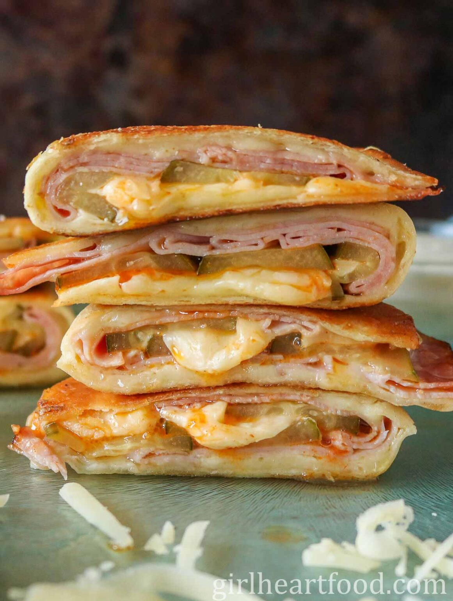

Description
QUICK yet full of protein fast simple quasedilla, 2 tortillas and some eggs,meat and cheese.
Sometimes the simpler the better
Ingredients
-
2 whole grain tortillas (whole grain makes you more full)
-
ham,cheese
-
tomatoe puree
-
2eggs + 2-3 egg whites
-
salt, pepper, oregano
Instructions
-
Mix eggs and egg whites, pour in to the pan
-
Salt and pepper the mixture and on top put a tortilla
-
when cooked through and stuck on the tortilla, FLIP it
-
apply tomatoe puree,salt the puree, add oregano, ham,cheese and on top another tortilla
-
FLIP, and cook on the otherside on low-to medium heat untill tortilla gets crispy and cheese melts
Enjoy the low calorie "PIZZA"
Home